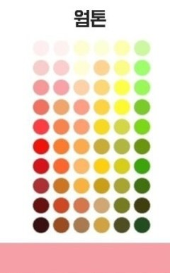
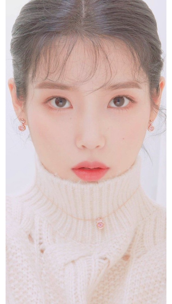
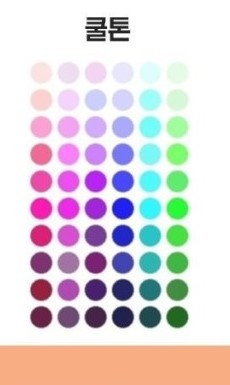

주의사항!
색감이 있는 전등 밑에서는 진행하지 말아주세요. 노랑, 파랑빛에서는 정확한 진단이 어렵습니다.
민낯인 상태에서 진행해주세요. 렌즈, 화장, 립 제품은 정확한 진단을 하기 어렵습니다. 세수 후, 기초제품만 바르고 진행해주세요.
염색하지 고않은 상태에서 진행해주세요. 본인의 자연모 상태에서 진행해야 가장 정확한 진단을 할 수 있습니다.
평소 본인이 잘 사용하던 화장품, 옷을 가져와주세요. 정확한 진단에 도움이 될 수 있습니다.
상대적으로 더 가깝다 생각하는 것에 체크해주세요.
종이에 해당하는 알파벳을 적어놔주세요.
자가진단 체크리스트
해당되는 부분에 체크 후, '테스트 결과 확인' 버튼을 눌러주세요.
본인에게 더 가까운 헤어컬러를 선택해주세요.
본인에게 더 가까운 피부색을 선택해주세요. 얼굴도 가능하고, 피부가 잘 타지 않는 팔 안쪽도 가능합니다.
더 잘 어울리는 악세서리를 선택해주세요.
주로 입는 옷들의 색감을 확인해주세요.
자신에게 어울리는 색조를 골라주세요.
테스트 결과를 확인
a가 3개 이상이라면 웜톤


a 2개 이하라면 쿨톤
